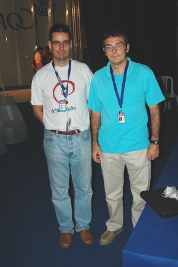
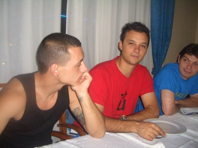

|
CampusBot 2006. Campus Party. Valencia |
Capítulo 6: el desmadre de los frikis...
El jueves por la tarde Jose María Cañas, del grupo de robótica de la Universidad Rey Juan Carlos de Madrid dió una conferencia sobre “Competiciones de fútbol robótico” (foto de la izquierda) y después hizo una demostración de fútbol con los robots Aibo, junto con Carlos Agüero y Víctor Gómez.
En la derecha se pueden ver dos Aibos del mismo equipo en acción. Están corriendo hacia la pelota. El equipo de fútbol robótico de la Universidad Rey Juan Carlos participó en la copa de Europa, Roboludens, que se celebró en abril del 2006. Alejandro y yo estuvimos allí. También participaron en los mundiales, celebrados en Bremen en Junio.
En la foto de la derecha estamos Jose María Cañas y yo. No le veía desde antes de irme a Hamburgo, en la charla que me invitaron a dar. Aproveché para enseñarle Hypercube y el nuevo simulador del robot basado en ODE.
|
 |
¿Y este par de frikis quienes son? (foto de la izquierda). ahhhhhhh, ¡¡si son Andrés y Ricardo!!. Estaban probando los prototipos de los cascos para el concurso de Robotrakers humanos que se celebraría el Sábado y que estaba organizado por A.R.D.E
Llegó la hora de la cena, y para variar, ¡¡NOS FUIMOS AL CHINO!!. Era la cena de A.R.D.E. Todos nos pusimos las camisetas y gorras y nos fuimos a darnos un homenaje. No podían faltar los palillos. En la foro de la derecha, Alejandro está luchando con los palillos y un trozo de pollo. Me recordaba la tena que tuvimos con Houxiang en Hamburgo :-)
|
|
En la foto de la izquierda están Víctor Gómez y Carlos Agüero , de la Universidad Rey Juan Carlos, junto a Iván. Se estaba fraguando la fiesta que se iban a correr al finalizar la cena...
Al terminar la cena, algunos nos fuimos a continuar frikeando en la campus... y otros se prefirieron correrse una fiesta salvaje :-) En la foto de la derecha están Gedeón e Iván, mostrando los nuevos tatuajes que se habían hecho (menos mal que no eran tatuajes permanentes). No desvelaré más detalles de lo acontecido esa noche. Sólo recuerdo que llegaron a la mañana siguiente con tatuajes y purpurina por todo el cuerpo.
|
 |
Y hablando de frikis... ¡¡Vaya par de frikis que están echos Alejandro y Andrés!!.
|
|

{kind=link}